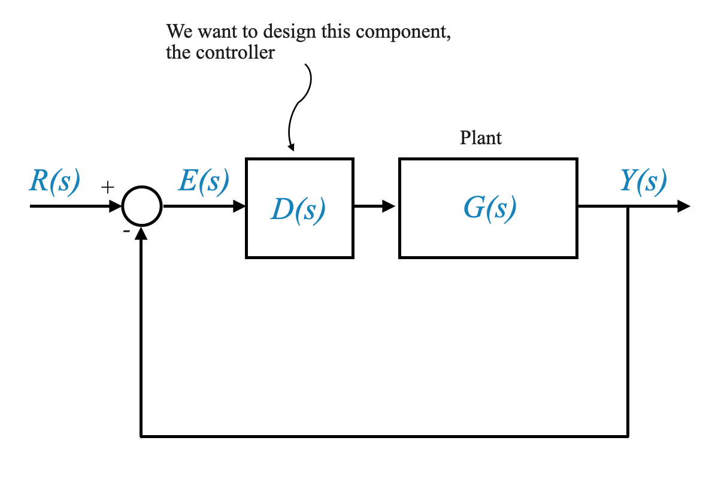
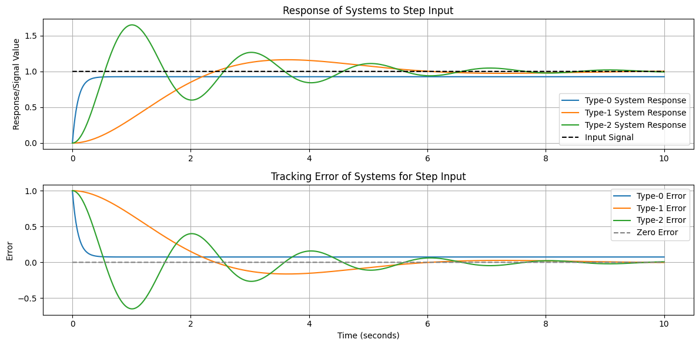
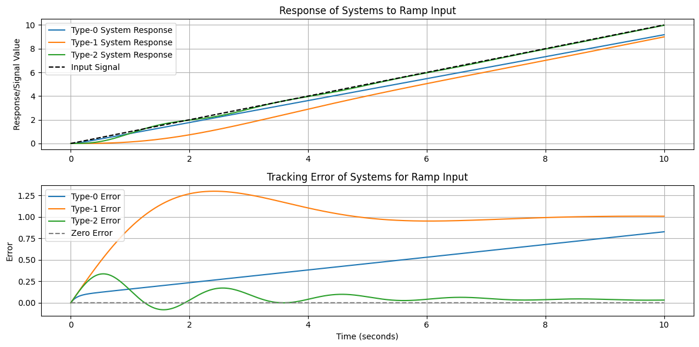
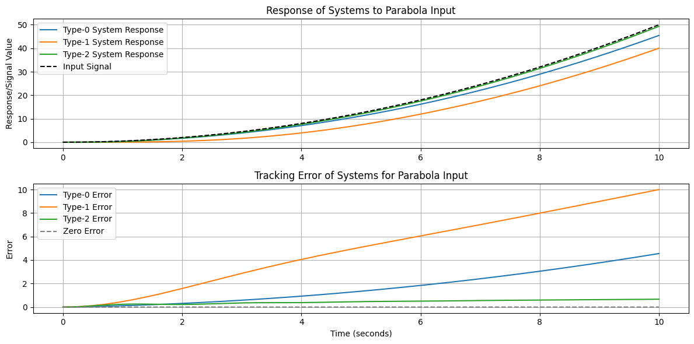
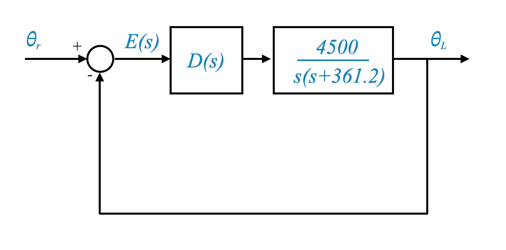

In previous notebookes, we delved into the performance of feedback systems. This notebook focuses on two key areas: steady-state accuracy and a complete design example.
We aim to solidify your understanding of these concepts through a practical approach.
Steady-State Accuracy
Steady-state accuracy is a crucial aspect of control systems, indicating the system’s ability to maintain a constant output when subjected to a constant input. We visited this concept already and now we will revisit it, adding a quantitative perspective.

Let’s delve deeper into the quantitative description of steady-state accuracy using the block diagram.
We focus on the relationship between the plant model $ G(s) $, the controller $ D(s) $, and how they interact with the command input $ R $, the output $ Y $, and the error $ E $.
The presence of a disturbance can be analyse in a similar way.
As we saw multiple times already:
Plant Model $ G(s) $:
This represents the transfer function of the system we are controlling. It’s a mathematical model of the system’s dynamic behavior.
Controller $ D(s) $:
$ D(s) $ is the transfer function of the controller in the system. It defines how the controller will act on the error signal to adjust the system’s behavior.
Feedback System Configuration:
The system is configured in a feedback loop where the output is compared with the input to generate an error signal $ E $.
Error Signal $ E(s) $:
This is a key part of the feedback loop. $ E(s) $ represents the difference between the desired output (command input $ R(s) $) and the actual output $ Y(s) $ of the system.
Command Input $ R(s) $:
This is the desired system output in the Laplace domain. It could be a step, ramp, or any other input form.
System Output $ Y(s) $:
The actual output of the system, also represented in the Laplace domain.
Error Dynamics
In a control system, we often express the error $ E(s) $ as $ E(s) = R(s) - Y(s) $. In a feedback loop, this becomes $ E(s) = R(s) - G(s)D(s)E(s) $.
Rearranging for $ E(s) $: By rearranging the above equation, we get
\[ E(s) = \frac{R(s)}{1 + D(s)G(s)} \]
Here, $D(s)G(s) $ represents the total loop gain of the system.
Why Split $ G(s) $ and $ D(s) $?
By considering $ G(s) $ and $ D(s) $ separately, we can study the system more flexibly, especially when considering different types of controllers (PD, PI, PID).
This separation allows for a modular approach to system design, where the plant and controller can be designed and analyzed independently before being combined.
Practical Implications
Design Flexibility: Different controllers (PD, PI, PID) can be modeled and tested by simply changing $ D(s) $ without altering the plant model $ G(s) $.
System Analysis: The impact of controller changes on system performance, including stability, transient response, and steady-state error, can be readily assessed.
Controller Tuning: By manipulating $ D(s) $, the controller can be tuned to achieve desired performance specifications like minimal steady-state error, desired transient response, and stability margins.
Final Value Theorem Revisited
The final value theorem is a tool we use to calculate the steady-state error of a system. Recall the theorem:
\[ e_{ss} = \lim_{s \to 0} sE(s) \]
Where $ E(s) $ is the error signal in the Laplace domain.
This simplifies to \[ e_{ss} = \frac{1}{1 + K_p} \]
where $ K_p $ is called position error constant.
Instead of specifying the steady state error of the system to a unit-step input you can equivalently reference the position error constant.
It is important to highlight that in the realm of position control systems, a step input is synonymous with a position input. This concept, though, is not limited to just position control scenarios. The principle can be extended to various types of control systems. For instance, in temperature control or liquid level control systems, the step input may represent a sudden change in the desired temperature or level. The position error constant thus becomes a versatile tool, providing a universal metric to quantify and compare the steady-state accuracy of diverse control systems across different applications.
with $ K_v = _{s } sD(s)G(s)$ being the velocity error constant.
In position control systems, a ramp input equates to a velocity command. When discussing the velocity error constant, it’s understood that the system is responding to a ramp input.
where $ K_a = _{s }s^2D(s)G(s)$ is the acceleration error constant.
In position control systems, a ramp input equates to an acceleration command. When discussing the acceleration error constant, it’s understood that the system is responding to a parabolic input.
The conclusion from our discussion on steady-state accuracy is quite significant. There are two primary ways to describe the steady-state accuracy of a system:
Steady-State Error with a Specified Input: This approach involves directly specifying the steady-state error for a given type of input signal.
Error Constants $ K_p, K_v, $ and $ K_a $: Alternatively, we can describe the system’s steady-state accuracy using error constants:
$ K_p $ for position error constant,
$ K_v $ for velocity error constant,
$ K_a $ for acceleration error constant.
These error constants are defined specifically for standard input types: unit-step, unit-ramp, and unit-parabolic signals.
However, it’s important to understand that if the input to your system differs from these standard forms, you’ll need to apply appropriate scaling to the error constants. This scaling is necessary to accurately represent the steady-state error for non-standard inputs. By doing so, you can extend the application of these error constants to a wider range of input signals, maintaining the system’s steady-state accuracy description’s relevance and accuracy. The process of scaling, once understood, becomes straightforward, allowing for flexible adaptation to various input types.
General Expression of the Transfer Function
The transfer function of a control system, whether it be the plant model $ G(s) $ or the combined system $ D(s)G(s) $, can generally be represented as
\[ \frac{\prod_i (s - z_i)}{s^N \prod_j (s - p_j)} \]
In this representation, $ z_i $ and $ p_j $ signify the zeros and poles of the transfer function, respectively.
The term $ s^N $ is particularly important as it indicates the presence of poles at the origin (s = 0) on the s-plane.
For our analysis, we focus on cases where $ N $, implying no negative powers of $ s $ in the denominator.
Any zeros at the origin can be represented through $ z_i = 0 $. However, in this representation all potential pole-zero cancellations at the origin are already accounted for.
Understanding the Role of Poles at $ s = 0 $ in Steady-State Analysis
Key Insights on $ s^N $ in System’s Transfer Function:
The term $ s^N $ in the transfer function $ D(s)G(s) $ is pivotal in shaping the steady-state behavior of a control system. It directly influences how the system responds to various inputs, determined by the value of $ N $, the number of poles at the origin.
Analyzing the Impact as $ s $ Approaches Zero:
The focus here is on the system’s behavior in a steady-state condition.
As $ s $ nears zero, each term in the transfer function, such as $ (s - z_i) $ and $ (s - p_j) $, maintains a defined value.
The behavior of $ D(s)G(s) $ largely hinges on $ N $, the number of poles at $ s = 0 $. Specifically, different values of $ N $ can lead to certain terms in the function becoming infinite when $ s = 0 $. This is crucial because it determines whether the system can achieve a steady state for given inputs. For instance, a Type-0 system (with $ N = 0 $) has a finite error for step inputs but infinite errors for ramp and parabolic inputs.
The significance of $ s^N $ lies in its primary influence on the system’s steady-state behavior, essentially deciding whether the system will exhibit finite or infinite steady-state errors for various input types.
Considering Negative Values of $ N $:
In scenarios where $ N $ is negative, indicating a zero at the origin, the analysis remains unproblematic. This is because any term involving $ s $ would result in a zero magnitude in such instances, leading to a defined and predictable behavior in the transfer function.
In essence, the term $ s^N $ is a key determinant in the transfer function, shaping the control system’s steady-state accuracy. Understanding how this term behaves, particularly as $ s $ converges to zero, is vital in gaining insights into the system’s capacity to maintain a steady state under different input conditions.
System Classification and Steady-State Behavior Based on \(N\)
Classification of Systems by $ N $ and Consideration of Input Types:
Control systems are classified based on the value of $ N $, which signifies the number of poles at the origin. This is equivalently the number of integrators in the system’s forward path. In this classification:
A Type-0 system, where $ N = 0 $, has no integrators at the origin.
A Type-1 system has one integrator, indicating a single pole at the origin, and this pattern continues for higher system types.
It’s crucial to understand, however, that the influence of $ N $ on the system’s response isn’t absolute but varies with the type of input. If the system’s numerator has terms that counteract the $ s^N $ effect in the denominator, then the system might not exhibit infinite behavior for certain inputs.
The value of $ N $ is generally a strong indicator of the system’s potential for steady-state accuracy. Yet, the actual steady-state behavior also hinges on the nature of the input. In some cases, specific input types may lead to cancellations in the transfer function, altering the expected steady-state error irrespective of $ N $. Hence, the system’s steady-state response is determined not just by $ N $ alone, but also by the interaction of $ N $ with the particular input function $ R(s) $. This nuanced understanding is vital for accurately predicting and designing system responses.
Controller’s Influence and Handling Different Inputs
The controller $ D(s) $ has the capability to modify the count of integrators in the forward path of a system, thereby significantly shaping its steady-state behavior.
For instance, using a PI controller is a strategic way to integrate an additional integrator into the forward path. This deliberate addition is crucial for fine-tuning the system’s performance to align with specific operational requirements.
The nature of the input signal, whether it’s a step, ramp, or parabolic type, also plays a critical role in influencing the system’s reaction. In the case of a Type-1 system (one integrator), one can expect a finite steady-state error when dealing with a step input. However, the response but could have infinite error for a ramp or parabolic input, unless there’s a cancellation in the transfer function that alters this behavior.
Type Number of the System
The following table illustrates the relationship between the value of $ N $ and the corresponding type of control system:
Value of $ N $
Type of System
Description
0
Type-0 System
The system has no integrators in the forward path, meaning no poles at the origin.
1
Type-1 System
The system includes one integrator in the forward path, equivalent to a single pole at the origin.
2
Type-2 System
The system contains two integrators in the forward path, indicating two poles at the origin.
3
Type-3 System
The system has three integrators in the forward path, corresponding to three poles at the origin.
…
…
As $ N $ increases, the number of integrators in the forward path increases accordingly.
This table categorizes control systems based on the number of integrators (poles at the origin), which is a key factor in determining their steady-state response to different types of input signals.
The system characterized by the transfer function
\[ \frac{s}{s^2} = \frac{1}{s} \]
is identified as a Type-1 system.
This system effectively acts as an integrator, but it’s also important to recognize that this behavior results from an imperfect pole-zero cancellation.
While its operational effects closely mimic those of an ideal integrator, the presence of practical imperfections means that it does not achieve the exact behavior of a perfect integrator. This distinction highlights the system’s real-world limitations compared to the theoretical ideal that we are representing mathematically.
Exploring System Types and Their Behaviours Based on $ N $
The transfer function of a control system, whether it be the plant model $ G(s) $ or the combined system $ D(s)G(s) $, can typically be represented as:
Here’s a table that outlines different system types based on the value of $ N$, along with examples and key characteristics:
Value of $ N$
System Type
Characteristics
Example
0
Type-0 System
No integrators in the forward path. Typically, finite steady-state error for step inputs but infinite error for ramp or parabolic inputs.
Temperature control systems modeled as $ $, Liquid level control systems.
1
Type-1 System
One integrator in the forward path. Zero steady-state error for step inputs, finite for ramp inputs, but infinite for parabolic inputs.
Motor control systems in speed control applications, modeled as $ $.
2
Type-2 System
Two integrators in the forward path. Zero steady-state error for both step and ramp inputs, finite for parabolic inputs.
Attitude control of a satellite, modeled as $ $.
≥3
Type-3 System
Three or more integrators in the forward path. Highly specialized applications requiring advanced static accuracy.
Advanced radar or antenna control systems tracking fast-moving targets.
This table provides a clear overview of how the number of integrators in the forward path, indicated by $ N$, categorizes the system and influences its response to various inputs.
Analyzing Steady-State Error in Type-0 Systems
In a Type-0 system, the position error constant $ K_p $ is given by:
For this system type, the steady-state error ( e_{ss} ) in response to a step input is calculated as:
\[ e_{ss} = \frac{1}{1 + K_p} \]
This value is finite, indicating that Type-0 systems can effectively handle step inputs with a finite error at steady state.
However, when it comes to ramp and parabolic inputs, the scenario changes dramatically:
For Ramp Inputs:\[ e_{ss}^{ramp} = \lim_{s \to 0} \frac{1}{sD(s)G(s)} = \frac{1}{K_v} = \infty \] The system exhibits an infinite steady-state error, demonstrating its inability to maintain accuracy with ramp inputs.
For Parabolic Inputs:\[ e_{ss}^{parabola} = \lim_{s \to 0} \frac{1}{s^2D(s)G(s)} = \frac{1}{K_a} = \infty \] Similar to ramp inputs, the error is infinite for parabolic inputs as well.
Implications for Type-0 Systems
This analysis reveals that Type-0 systems are limited in their ability to achieve high steady-state accuracy, especially for ramp and parabolic inputs. While they can provide reasonable performance for step inputs, their utility is constrained when faced with more complex input types.
To enhance the steady-state behavior and meet higher accuracy demands, it is necessary to intentionally introduce integrators into the controller’s design. Adding integrators effectively increases the type of the system, thereby improving its ability to handle a broader range of input types with better steady-state accuracy.
Analyzing Steady-State Error in Type-1 Systems
Understanding Steady-State Error in Type-1 Systems
In Type-1 systems, characterized by one integrator in the forward path, the \(D(s)G(s)\) transfer function is:
Hence, the steady-state error for parabolic inputs is infinite, showing that Type-1 systems cannot accurately track such inputs at steady state.
Practical Implications for Type-1 Systems
Type-1 systems excel in tracking step inputs perfectly with zero steady-state error and offer reasonable performance for ramp inputs with finite error. However, they fall short in tracking parabolic inputs, as indicated by the infinite steady-state error.
This analysis underscores that Type-1 systems are suitable for applications where step or ramp inputs are predominant, but they may not be adequate for scenarios requiring accurate tracking of more complex input types like parabolic signals. In such cases, further modifications or a different system type might be necessary for optimal performance.
Analysis of Steady-State Error in Type-2 Systems
Type-2 systems are characterized by having two integrators in the forward path. This feature significantly influences their response to different types of inputs.
Steady-State Error for Different Inputs:
Step Input:
For a step input, the steady-state error $ e_{ss} $ is given by: \[ e_{ss} = \frac{1}{1 + K_p} \] Since $ K_p = \(, the steady-state error for a step input is:\)$ e_{ss} = = 0 $$ This indicates zero steady-state error for step inputs, showcasing perfect tracking capability.
Ramp Input:
For a ramp input, the velocity error constant $ K_v $ is also infinite for a Type-2 system. The steady-state error for a ramp input is calculated as: \[ e_{ss}^{ramp} = \lim_{s \to 0} \frac{1}{sD(s)G(s)} \] Given that $ K_v = \(, the steady-state error for a ramp input becomes:\)$ e_{ss}^{ramp} = = = 0 $$ Hence, Type-2 systems also exhibit zero steady-state error for ramp inputs.
Parabolic Input:
For parabolic inputs, we look at the acceleration error constant $ K_a $. In a Type-2 system, $ K_a $ is finite. The steady-state error for a parabolic input is given by: \[ e_{ss}^{parabola} = \lim_{s \to 0} \frac{1}{s^2D(s)G(s)} \] This yields a finite value for $ e_{ss}^{parabola} $, implying that Type-2 systems have a finite steady-state error for parabolic inputs.
Summary and Implications for Type-2 Systems
Type-2 systems are highly capable in terms of steady-state performance. They demonstrate zero steady-state error for both step and ramp inputs, indicating excellent tracking abilities for these input types. For parabolic inputs, Type-2 systems maintain a finite steady-state error, making them suitable for applications where precise tracking of such inputs is required.
In summary, Type-2 systems offer an advanced level of control, particularly in scenarios where the inputs can vary from simple steps to more complex parabolic forms. Their dual integrators in the forward path equip them with the ability to handle a wider range of input types effectively compared to Type-0 and Type-1 systems. However, two integrators in the forward path will make the system closer to instability. There is a design trade-off to make.
Commentary on Type-3 Systems
Type-3 systems are characterized by having three integrators in the forward path. While less common than Type-0, Type-1, or Type-2 systems, they are significant in certain advanced control applications.
The need for a Type-3 system arises when the application demands zero steady-state error even for acceleration-type inputs. This is critical in scenarios where the input undergoes rapid changes, as in military radar systems tracking fast-moving aircraft.
When Might a Type-3 System Be Necessary?
High-Performance Requirements: Type-3 systems are typically required in scenarios demanding extremely precise control and high levels of steady-state accuracy for a variety of input types, including step, ramp, and parabolic inputs.
Fast-Moving Target Tracking: They are particularly useful in applications like advanced radar or antenna control systems, where tracking fast-moving targets with high precision is crucial. In these applications, the inputs can be quite complex and may involve rapid and unpredictable changes.
Sophisticated Industrial Applications: Certain high-end automation systems or robotic controls might also employ Type-3 systems to achieve superior dynamic response characteristics and minimize errors in a broad range of operating conditions.
Potential Issues with Type-3 Systems
Complexity in Design and Tuning: The presence of multiple integrators increases the complexity of the control system design. Tuning a Type-3 system to achieve desired performance without compromising stability can be challenging.
Stability Concerns: One of the significant issues with Type-3 systems is the increased risk of instability. The higher the number of integrators, the more challenging it becomes to maintain system stability, especially under varying operating conditions.
Practical Limitations: Implementing a Type-3 system may face practical constraints. These include the physical limitations of the system components, environmental factors, and the inherent noise and non-linearities present in real-world systems.
While Type-3 systems offer advanced control capabilities and can handle a wide range of input types with high accuracy, their design, implementation, and maintenance require a sophisticated understanding of control theory and practical considerations. They are typically reserved for specialized applications where their advanced characteristics are essential and justify the additional complexity and potential risks.
Summary
The system’s response to various inputs (step, ramp, parabolic) depends on its type.
A Type-0 system will have a finite steady-state error for a step input, but an infinite error for a ramp or parabolic input.
A Type-1 system has zero steady-state error for a step input but finite for a ramp and infinite for a parabolic input.
Illustrate the responses of Type-0, Type-1, and Type-2 systems
To illustrate the responses of Type-0, Type-1, and Type-2 systems to different inputs, we can use Python with libraries such as matplotlib for plotting and scipy for control system analysis.
import numpy as npimport matplotlib.pyplot as pltimport control as ctrl# Define the time range for simulationt = np.linspace(0, 10, 2000)# Open-loop transfer functions# Type-0 system: K/(s + 0.8)K_0 =10type_0_ol = ctrl.TransferFunction([K_0], [1, 0.8])# Type-1 system: K/(s(s + 1))K_1 =1type_1_ol = ctrl.TransferFunction([K_1], [1, 1, 0])# Type-2 system: Double Integrator with damping (1/s^2)# Adding a small damping factor to stabilize the responseK_2 =10damping_factor =1type_2_ol = ctrl.TransferFunction([K_2, 1], [1, damping_factor, 0, 0]) # note that we are adding a zero.# Closed-loop transfer functionstype_0_sys = ctrl.feedback(type_0_ol)type_1_sys = ctrl.feedback(type_1_ol)type_2_sys = ctrl.feedback(type_2_ol)# Function to plot system responses, input signal, and tracking errordef plot_responses_and_errors(systems, t, input_signal, input_type): plt.figure(figsize=(12, 6))# Plotting system responses and errorsfor i, sys inenumerate(systems): t_out, y_out = ctrl.forced_response(sys, T=t, U=input_signal) error = input_signal - y_out# Plotting response plt.subplot(2, 1, 1) plt.plot(t_out, y_out, label=f'{["Type-0", "Type-1", "Type-2"][i]} System Response') plt.title(f'Response of Systems to {input_type} Input') plt.ylabel('Response/Signal Value') plt.grid(True)# Plotting error plt.subplot(2, 1, 2) plt.plot(t_out, error, label=f'{["Type-0", "Type-1", "Type-2"][i]} Error') plt.title(f'Tracking Error of Systems for {input_type} Input') plt.xlabel('Time (seconds)') plt.ylabel('Error') plt.grid(True)# Adding the input signal plot to the response subplot plt.subplot(2, 1, 1) plt.plot(t, input_signal, label='Input Signal', color='black', linestyle='--') plt.legend()# Adding the input signal plot to the error subplot (as zero line) plt.subplot(2, 1, 2) plt.plot(t, np.zeros_like(t), label='Zero Error', color='grey', linestyle='--') plt.legend() plt.tight_layout() plt.show()# Input signals: unit step, unit ramp, and unit parabolastep_input = np.ones_like(t)ramp_input = tparabola_input =0.5* t**2# Systems list and plotting responses with errorssystems = [type_0_sys, type_1_sys, type_2_sys]plot_responses_and_errors(systems, t, step_input, 'Step')plot_responses_and_errors(systems, t, ramp_input, 'Ramp')plot_responses_and_errors(systems, t, parabola_input, 'Parabola')



Further comments
Generally, control system requirements assume a goal of achieving zero steady-state error for unit step inputs and maintaining finite errors for ramp inputs, unless other specifications are provided.
When selecting controllers, the system’s inherent characteristics guide the choice:
If the system naturally includes an integrator, employing a Proportional-Derivative (PD) controller is often appropriate. This choice maintains the system’s existing type, enhancing control without altering its fundamental behavior.
Conversely, for systems lacking an in-built integrator, a Proportional-Integral (PI) controller is typically more effective. A PI controller introduces an additional integrator, effectively increasing the system’s type number, and thereby improving its ability to handle a wider range of input types, especially in terms of steady-state accuracy.
Design Example: A PID Control Scheme
Let’s apply our understanding to design a PID controller for a given plant. We’ll walk through the design process step-by-step.

Position Control System Design with a Proportional Controller
In a position control problem, our aim is to design a suitable controller $ D(s) $ that ensures desired system performance. Given that the plant already incorporates an integrator, we can start our design process with a straightforward proportional controller represented as $ D(s) = K_A $.
Analyzing the Combined System
For a proportional controller $ D(s) = K_A $, the transfer function of the combined system (controller and plant) is:
\[ D(s)G(s) = \frac{4500 K_A}{s(s+361.2)} \]
Characteristic Equation
The characteristic equation of this closed-loop system is:
\[ s^2 + 361.2 s + 4500 K_A = 0 \]
From this characteristic equation, we can derive important system parameters as functions of $ K_A $:
Natural frequency ($ _n $): $ _n = $
Damping ratio ($ $): $ = $
System poles: $ s_{1,2} = -180.6 j $
Steady-state error for unit ramp input: $ e_{ss} = $
For a unit-step input, the steady-state error is zero due to the presence of the integrator in the plant.
Selecting $ K_A $ for Critical Damping
To achieve critical damping ($ = 1 $), let’s choose:
\[ K_A = 7.247 \]
This specific value of $ K_A $ results in a critically damped response, which is ideal for position control as it ensures fast response without oscillation.
Choosing a gain such that $ = 1 $ might lead to a high settling time. Note also that the rise time is infinity (the system only gets to 1 when \(t\) goes to infinity).
To calculate the settling time, remember that the approximation that we derived was valid when \(0<\zeta<0.7\).
Selecting \(K_A\) to reduce the damping ration \(\zeta\).
To achieve critical damping ($ = 0.707 $), let’s choose:
\[ K_A = 14.5 \]
Which leads to a maximum overshoot:
\[
M_p = 4.3\%
\]
The rise time in this case is lower than before, and in fact might be the lowest (I did not do the formal calculations).
\(M_p = 4.3\%\) is the price we are paying for a lower rise time, and might be acceptable.
which means that if we want to reduce it we need to reduce the value of \(\zeta\) and the peak overshoot increases.
Assume now that your requirement is:
\[M_p\le25\%\]
This corresponds to a minium damping ratio of:
\[
\zeta= 0.4
\]
which is obtained for
\[
K_A = 45.3
\]
This reduces the steady-state error but we are also moving the system towards instability.
There is nothing else we can do with a proportional controller without violating our requirements.
Python Simulation of the Critically Damped System
We will now simulate this critically damped system in Python to visualize its response to a step input:
This script simulates and plots the step response of the position control system with a proportional controller set for critical damping. The chosen value of $ K_A $ ensures that the system is critically damped, thereby achieving a quick and stable response to changes in input without overshooting.
Use the code below to try:
\(K_A = 7.247\)
\(K_A = 14.5\)
verify what is the associated rise time, steady state error and maximum overshoot.
import numpy as npimport matplotlib.pyplot as pltimport control as ctrlimport ipywidgets as widgetsfrom IPython.display import display# Function to plot the step response for a given K_Adef plot_step_response(K_A):# Transfer function of the system G_s = ctrl.TransferFunction([4500* K_A], [1, 361.2, 4500* K_A])# Time range for simulation t = np.linspace(0, 0.4, 500)# Simulate step response t, y = ctrl.step_response(G_s, T=t)# steady state error e_ss =0.0803/K_A# Peak overshoot omega_n = np.sqrt(4500*K_A) zeta =2.692/np.sqrt(K_A) omega_d = omega_n * np.sqrt(1- zeta**2)#M_p = np.exp(-zeta*omega_n*np.pi/omega_d) M_p = np.exp(-np.pi*zeta/(np.sqrt(1-zeta**2)))# Plotting plt.figure(figsize=(10, 6)) plt.plot(t, y) plt.title(f'Step Response with Proportional Gain K_A = {K_A:.2f}, e_ss = {e_ss:.4f}, M_p % = {M_p*100:.1f}') plt.xlabel('Time (seconds)') plt.ylabel('Response') plt.grid() plt.show()# Create a slider for K_AK_A_slider = widgets.FloatSlider( value=7.247,min=0.1,max=47.0, step=0.1, description='K_A Slider:', continuous_update=False)# Create a text box for K_AK_A_text = widgets.FloatText( value=7.247, description='K_A Text:',)# Function to synchronize slider and text box valuesdef on_value_change(change): K_A_slider.value = change.new K_A_text.value = change.newK_A_slider.observe(on_value_change, names='value')K_A_text.observe(on_value_change, names='value')# Use `interactive` to bind the plot function to both the slider and the text boxdisplay(widgets.interactive(plot_step_response, K_A=K_A_slider))display(K_A_text)
Improving Performance - Enhanced Control System Design with PD and PI Controllers
PD Control:
Overview: The addition of a derivative term in PD control significantly influences the system’s damping characteristics. While it doesn’t directly reduce the steady-state error, the derivative action plays a crucial role in enhancing system stability and response.
Impact on Design: By incorporating a derivative term, PD control allows for an increase in the proportional gain $ K_A $ without breaching maximum overshoot constraints. Specifically, the enhanced damping provided by the derivative term enables the system to tolerate a higher $ K_A $, making it possible to maintain overshoot within the desired limit of 25%.
Controller Formula: $ D(s) = K_C + K_Ds $, where $ K_C $ is the proportional gain and $ K_D $ is the derivative gain.
PI Control:
Overview: PI control introduces an integrator to the control scheme, directly targeting the reduction of steady-state error, particularly effective in eliminating offset errors in various control applications.
Balancing Transient and Steady-State Performance: While a PI controller is adept at minimizing steady-state error, careful tuning is required to ensure that transient performance criteria, such as settling time and overshoot, are also met.
For the PI (Proportional-Integral) control case, the controller $ D(s) $ is typically formulated as a combination of a proportional term and an integral term. The general form of a PI controller in the Laplace domain is:
\[ D(s) = K_P + \frac{K_I}{s} \]
Where: - $ K_P $ is the proportional gain. - $ K_I $ is the integral gain.
The proportional term $ K_P $ provides a control action proportional to the error signal, offering immediate response to changes in the system. The integral term $ $ accumulates the error over time, aiming to eliminate the steady-state error. The combination of these two actions allows the PI controller to both react promptly to system changes and methodically reduce any persistent error.
In a practical control system, tuning the values of $ K_P $ and $ K_I $ is crucial to achieving the desired balance between rapid response and steady-state accuracy, ensuring that the system meets its performance specifications effectively.
Advanced Controller Design: Root Locus and Frequency Response Methods
In our upcoming discussions, we will delve into more formalized methods for controller design, namely the Root Locus method and the Frequency Response method. These techniques provide powerful tools for analyzing and designing control systems, allowing us to:
Precisely shape the system’s response by adjusting controller parameters.
Visually assess the stability and performance trade-offs.
Fine-tune controllers to achieve a desirable balance between transient response and steady-state accuracy.
Through these methods, we can develop a deeper understanding of control system dynamics and design controllers that are optimally suited to the specific requirements of our applications.
PD control
To modify the code to use a controller described by $ D(s) = K_C + K_Ds $, which is a proportional-derivative (PD) controller, we need to update the transfer function of the combined system (controller and plant) accordingly.
Assuming the plant transfer function remains the same as in the previous example, the combined transfer function of the system with the PD controller will be:
Let’s update the Python script to incorporate this PD controller. We’ll add sliders for both $ K_C $ (proportional gain) and $ K_D $ (derivative gain) to interactively observe the system’s response.
The script below allows you to dynamically adjust the proportional gain $ K_C $ and the derivative gain $ K_D $ of the PD controller using sliders. The step response of the system will update based on these values, helping you visualize how the PD controller affects the system’s behavior. Remember, this interactive feature works in a Jupyter notebook environment.
import numpy as npimport matplotlib.pyplot as pltimport control as ctrlimport ipywidgets as widgetsfrom IPython.display import display# Function to plot the step response for given K_C and K_Ddef plot_step_response(K_C, K_D):# PD controller transfer function D_s = ctrl.TransferFunction([K_D, K_C], [1])# Plant transfer function G_s = ctrl.TransferFunction([4500], [1, 361.2, 0])# Combined system transfer function system = ctrl.series(D_s, G_s) closed_loop_system = ctrl.feedback(system)# Time range for simulation t = np.linspace(0, 2, 500)# Simulate step response t, y = ctrl.step_response(closed_loop_system, T=t)# Peak overshoot (M_p) and steady-state error (e_ss) calculations e_ss =0.0803/ K_C # Assuming K_C is dominant for steady-state error peak = np.max(y) M_p = ((peak -1) /1) *100# Peak overshoot in percentage# Plotting plt.figure(figsize=(10, 6)) plt.plot(t, y) plt.title(f'Step Response with K_C = {K_C:.2f}, K_D = {K_D:.2f}, e_ss = {e_ss:.4f}, M_p % = {M_p:.1f}') plt.xlabel('Time (seconds)') plt.ylabel('Response') plt.grid() plt.show()# Sliders for K_C and K_DK_C_slider = widgets.FloatSlider(value=1.0, min=0.1, max=10, step=0.1, description='K_C:')# K_D_slider = widgets.FloatSlider(value=1.0, min=0.1, max=10, step=0.1, description='K_D:')K_D_slider = widgets.FloatSlider(value=.1, min=0, max=2, step=0.1, description='K_D:')# Interactive plotwidgets.interactive(plot_step_response, K_C=K_C_slider, K_D=K_D_slider)
PI Control
To modify the code for a PI control, we need to change the transfer function of the controller to represent a PI controller and adjust the calculations accordingly. The PI controller has the form $ D(s) = K_P + $, where $ K_P $ is the proportional gain and $ K_I $ is the integral gain.
For simplicity, let’s assume $ K_P $ and $ K_I $ are equal and represented by the same variable $ K_A $ in the script. The transfer function of the PI controller will then be $ D(s) = K_A + $. We also need to update the combined system transfer function and adjust the calculations for the steady-state error and peak overshoot.
The steady-state error for a step input is zero due to the integrator in the PI controller. Calculating the peak overshoot for a PI controller analytically can be complex and is often done using numerical methods or graphically from the response plot. The script now uses interactive sliders to allow to adjust $ K_A $ and observe the system’s response.
Here’s the modified script:
import numpy as npimport matplotlib.pyplot as pltimport control as ctrlimport ipywidgets as widgetsfrom IPython.display import display# Function to plot the step response for a given K_Adef plot_step_response(K_A):# PI controller transfer function: D(s) = K_A + K_A/s D_s = ctrl.TransferFunction([K_A, K_A], [1, 0])# Plant transfer function: G(s) = 4500/(s(s+361.2)) G_s = ctrl.TransferFunction([4500], [1, 361.2, 0])# Combined system transfer function system = ctrl.series(D_s, G_s) closed_loop_system = ctrl.feedback(system)# Time range for simulation t = np.linspace(0, 2, 500)# Simulate step response t, y = ctrl.step_response(closed_loop_system, T=t)# Steady-state error is zero for a step input due to the integrator in PI controller e_ss =0.0# Peak overshoot calculation is not straightforward for a PI controller# and typically requires numerical methods or graphically from the plot# Plotting plt.figure(figsize=(10, 6)) plt.plot(t, y) plt.title(f'Step Response with PI Gain K_A = {K_A:.2f}, e_ss = {e_ss:.4f}') plt.xlabel('Time (seconds)') plt.ylabel('Response') plt.grid() plt.show()# Create a slider for K_AK_A_slider = widgets.FloatSlider( value=1.0,min=0.1,max=10.0, step=0.1, description='K_A Slider:', continuous_update=False)# Create a text box for K_AK_A_text = widgets.FloatText( value=1.0, description='K_A Text:',)# Function to synchronize slider and text box valuesdef on_value_change(change): K_A_slider.value = change.new K_A_text.value = change.newK_A_slider.observe(on_value_change, names='value')K_A_text.observe(on_value_change, names='value')# Use `interactive` to bind the plot function to both the slider and the text boxdisplay(widgets.interactive(plot_step_response, K_A=K_A_slider))display(K_A_text)